import math
import numpy as np
import skrf as rf
# want to graph frequency vs attenuation
omegas = np.linspace(70e6, 130e6) * np.pi * 2
freq_cutoff = 100e6
omega_cutoff = freq_cutoff * 2 * np.pi
pb_allowable_ripple = 1 # 1dB of allowable ripple in the passband
epsilon = np.sqrt( np.pow(10, pb_allowable_ripple / 10) - 1)
n = 3 # order that we're using
B = 1/n * np.arccosh(1/epsilon)
inv_ratio = (omegas/omega_cutoff) * np.cosh(B) # (w/wc)'
def C_3 (x):
return 4 * np.power(x, 3) - 3 * x
attenuation = 10 * np.log10(1 + np.power(epsilon, 2) * np.power( C_3(inv_ratio), 2))Analytical Chart Analysis
Predefining the Necessary Functions to Find Desired Values
import matplotlib.pyplot as plt
plt.xscale("log")
plt.plot(omegas, -attenuation)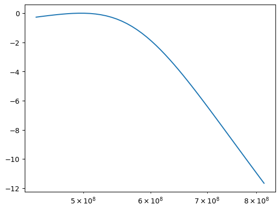
## Uses the math found within the RF Circuitry book to build an analytical model of the LPF Chebyshev filter we're building
def buildAtt(start_w, end_w):
omegas = np.linspace(start_w, end_w, 1000000) * np.pi * 2
freq_cutoff = 100e6
omega_cutoff = freq_cutoff * 2 * np.pi
pb_allowable_ripple = 0.5 # 1dB of allowable ripple in the passband
epsilon = np.sqrt( np.pow(10, pb_allowable_ripple / 10) - 1)
print("Epsilon ", epsilon)
n = 3 # order that we're using
B = 1/n * np.arccosh(1/epsilon)
inv_ratio = (omegas/omega_cutoff) * np.cosh(B) # (w/wc)'
attenuation = 10 * np.log10(1 + np.power(epsilon, 2) * np.power( C_3(inv_ratio), 2) )
return (omegas, attenuation)
## Finds the index of the value closest to our desired value within an array
def find(arr, val):
diff_mat = arr - np.ones(len(arr))*val
return np.argmin(np.abs(diff_mat))Original Frequency Range Set Between 0 to 300 MHz
fig, axes = plt.subplots(1,1)
axes.set_xlabel("Frequency (Hz)")
axes.set_ylabel("Attenuation (dB)")
curr_start = 0; curr_end = 300e6
[oms, at] = buildAtt(curr_start, curr_end)
plt.xscale("log")
plt.plot(oms, -at, linewidth=2)
zeroes = np.zeros(1000000)
plt.plot(oms, zeroes, linewidth=1)
loc_at_3 = find(-at, -3);
freq_at_3 = oms[loc_at_3]/(2*np.pi)
att_at_3 = -at[loc_at_3]
loc_at_20 = find(-at, -20);
freq_at_20 = oms[loc_at_20]/(2*np.pi)
att_at_20 = -at[loc_at_20]
plt.scatter(oms[loc_at_3], -at[loc_at_3], c='red')
plt.scatter(oms[loc_at_20], -at[loc_at_20], c='red')
print("Passband Edge: ", freq_at_3/1e6, "MHz")
print("Stopband Edge: ", freq_at_20/1e6, "MHz")
print("Insertion Loss: ", at[0])Epsilon 0.34931140018894796
Passband Edge: 99.95649995649997 MHz
Stopband Edge: 175.9042759042759 MHz
Insertion Loss: 0.0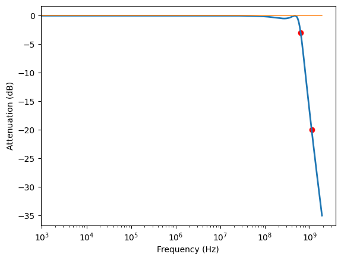
Zooming on 70 MHz to 130 MHz, as specified by Prof. Spencer
curr_start = 70e6; curr_end = 130e6
[oms, at] = buildAtt(curr_start, curr_end)
plt.xscale("log")
plt.plot(oms, -at, linewidth=2)
zeroes = np.zeros(1000000)
plt.plot(oms, zeroes, linewidth=1)Epsilon 0.34931140018894796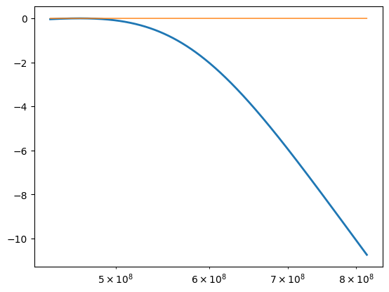
Zooming in on the Parts of the full Frequency Span that we Care About
curr_start = 10e6; curr_end = 250e6
[oms, at] = buildAtt(curr_start, curr_end)
plt.xscale("log")
plt.plot(oms, -at, linewidth=2)
zeroes = np.zeros(1000000)
plt.plot(oms, zeroes, linewidth=1)
loc_at_3 = find(-at, -3);
freq_at_3 = oms[loc_at_3]/(2*np.pi)
att_at_3 = -at[loc_at_3]
loc_at_20 = find(-at, -20);
freq_at_20 = oms[loc_at_20]/(2*np.pi)
att_at_20 = -at[loc_at_20]
plt.scatter(oms[loc_at_3], -at[loc_at_3], c='red')
plt.scatter(oms[loc_at_20], -at[loc_at_20], c='red')
print("Passband Edge: ", freq_at_3/1e6, "MHz")
print("Stopband Edge: ", freq_at_20/1e6, "MHz")
print("Insertion Loss: ", at[0])Epsilon 0.34931140018894796
Passband Edge: 99.95640995640994 MHz
Stopband Edge: 175.90424590424593 MHz
Insertion Loss: 0.062217124664675015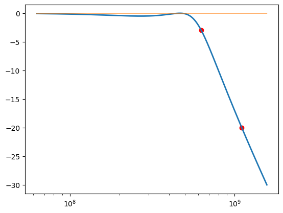
A Closer Look at Passband Ripple
idx = int(1000000/8*2.5)
plt.plot(oms[0:idx], -at[0:idx])
print(np.max(-at[0:idx]) - np.min(-at[0:idx]), "dB of Ripple")0.4999999999919422 dB of Ripple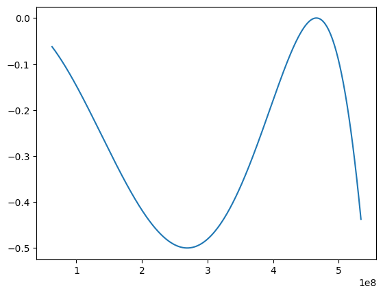
So we messed up…
I create a file that runs a series of curves of different orders, which will hopefully help us find the actual Chebyshev filter
def C_1(x):
return x
def C_2(x):
cheb_2 = 2 * np.pow(x, 2) - 1
return cheb_2
def C_3 (x):
return 4 * np.power(x, 3) - 3 * x
def C_4(x):
cheb_4 = 8 * np.pow(x, 4) - 8 * np.pow(x, 2) + 1
return cheb_4
def C_5(x):
cheb_5 = 16 * np.pow(x, 5) - 20 * np.pow(x, 3) + 5 * x
return cheb_5
def C_6(x):
cheb_6 = 32 * np.pow(x, 6) - 48 * np.pow(x, 4) + 18 * np.pow(x, 2) - 1
return cheb_6
def C_7(x):
cheb_7 = 64 * np.pow(x, 7) - 112 * np.pow(x, 5) + 56 * np.pow(x, 3) - 7 * x
return cheb_7
freq_ratios = np.linspace(0.5, 10, 10000)
pb_allowable_ripple = 0.5
epsilon = np.sqrt( np.pow(10, pb_allowable_ripple / 10) - 1)
n = 3 # order that we're using
B = 1/n * np.arccosh(1/epsilon)
inv__freq_ratios = freq_ratios * np.cosh(B) # (w/wc)'
att1 = 10 * np.log10(1 + np.power(epsilon, 2) * np.power( C_1(inv__freq_ratios), 2))
att2 = 10 * np.log10(1 + np.power(epsilon, 2) * np.power( C_2(inv__freq_ratios), 2))
att3 = 10 * np.log10(1 + np.power(epsilon, 2) * np.power( C_3(inv__freq_ratios), 2))
att4 = 10 * np.log10(1 + np.power(epsilon, 2) * np.power( C_4(inv__freq_ratios), 2))
att5 = 10 * np.log10(1 + np.power(epsilon, 2) * np.power( C_5(inv__freq_ratios), 2))
att6 = 10 * np.log10(1 + np.power(epsilon, 2) * np.power( C_6(inv__freq_ratios), 2))
att7 = 10 * np.log10(1 + np.power(epsilon, 2) * np.power( C_7(inv__freq_ratios), 2))
fig, axes = plt.subplots(1,1)
axes.set_title("Seven Orders of Chebyshev")
axes.set_xlabel("Frequency Ratio")
axes.set_ylabel("Attenuation")
plt.xscale("log")
end = -1
plt.plot(freq_ratios[:end], -att1[:end], linewidth=1, label="Chebyshev 1")
plt.plot(freq_ratios[:end], -att2[:end], linewidth=1, label="Chebyshev 2")
plt.plot(freq_ratios[:end], -att3[:end], linewidth=1, label="Chebyshev 3")
plt.plot(freq_ratios[:end], -att4[:end], linewidth=1, label="Chebyshev 4")
plt.plot(freq_ratios[:end], -att5[:end], linewidth=1, label="Chebyshev 5")
plt.plot(freq_ratios[:end], -att6[:end], linewidth=1, label="Chebyshev 6")
plt.plot(freq_ratios[:end], -att7[:end], linewidth=1, label="Chebyshev 7")
plt.legend()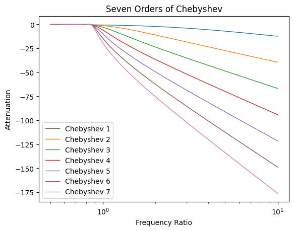
pb_allowable_ripple = 0.5
epsilon = np.sqrt( np.pow(10, pb_allowable_ripple / 10) - 1)
n = 3 # order that we're using
B = 1/n * np.arccosh(1/epsilon)
freq_ratios = np.linspace(0.5, 10, 10000)
inv__freq_ratios = freq_ratios * np.cosh(B) # (w/wc)'
fig, axes = plt.subplots(1,1)
att3 = 10 * np.log10(1 + np.power(epsilon, 2) * np.power( C_3(inv__freq_ratios), 2))
att4 = 10 * np.log10(1 + np.power(epsilon, 2) * np.power( C_4(inv__freq_ratios), 2))
att5 = 10 * np.log10(1 + np.power(epsilon, 2) * np.power( C_5(inv__freq_ratios), 2))
plt.xscale("log")
plt.axis([None, None, -1.2, 0])
axes.set_xlabel("Frequency Ratio")
axes.set_ylabel("Attenuation")
start=int(10000/50); end = int(10000/50 * 3)
plt.plot(freq_ratios[start:end], -att3[start:end], linewidth=2, label="Chebyshev 3")
plt.plot(freq_ratios[start:end], -att4[start:end], linewidth=2, label="Chebyshev 4")
plt.plot(freq_ratios[start:end], -att5[start:end], linewidth=2, label="Chebyshev 5")
plt.legend()
cheb_3_pB = find(-att3, -1)
cheb_4_pB = find(-att4, -1)
cheb_5_pB = find(-att5, -1)
print("cutoff omega = ", 100e6/(freq_ratios[cheb_3_pB]), "MHz")
print("cutoff omega = ", 100e6/(freq_ratios[cheb_4_pB]), "MHz")
print("cutoff omega = ", 100e6/(freq_ratios[cheb_5_pB]), "MHz")cutoff omega = 111465358.6756591 MHz
cutoff omega = 113754266.21160409 MHz
cutoff omega = 114746385.12738124 MHz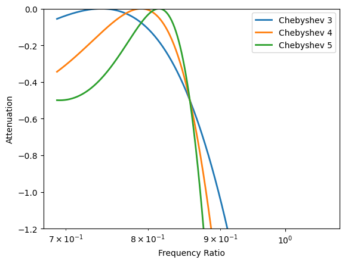
## find attenuation at the stop band, or 200/cutoff omega
cutoff_omega3 = 100e6/(freq_ratios[cheb_3_pB])
cutoff_omega4 = 100e6/(freq_ratios[cheb_4_pB])
cutoff_omega5 = 100e6/(freq_ratios[cheb_5_pB])
omegas_new = np.linspace(10e6, 250e6, 100000)
fixed_att3 = 10 * np.log10(1 + np.power(epsilon, 2) * np.power( C_3(omegas_new/cutoff_omega3), 2))
fixed_att4 = 10 * np.log10(1 + np.power(epsilon, 2) * np.power( C_4(omegas_new/cutoff_omega4), 2))
fixed_att5 = 10 * np.log10(1 + np.power(epsilon, 2) * np.power( C_5(omegas_new/cutoff_omega5), 2))
plt.plot(omegas_new, -fixed_att3, linewidth=2, label="Chebyshev 3")
plt.plot(omegas_new, -fixed_att4, linewidth=2, label="Chebyshev 4")
plt.plot(omegas_new, -fixed_att5, linewidth=2, label="Chebyshev 5")
plt.legend()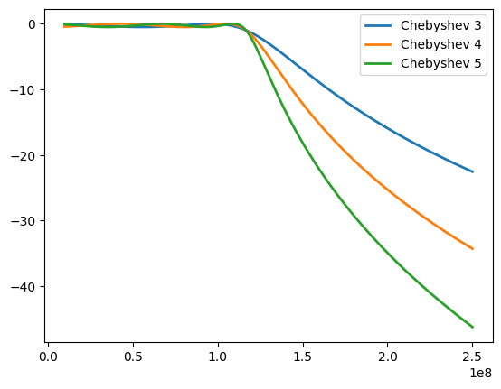
pb_allowable_ripple = 0.5
epsilon = np.sqrt( np.pow(10, pb_allowable_ripple / 10) - 1)
n = 3 # order that we're using
B = 1/n * np.arccosh(1/epsilon)
inv_C3_20 = 200e6/cutoff_omega3 * np.cosh(B) # (w/wc)'
inv_C4_20 = 200e6/cutoff_omega4 * np.cosh(B) # (w/wc)'
inv_C5_20 = 200e6/cutoff_omega5 * np.cosh(B) # (w/wc)'
calc3 = 10 * np.log10(1 + np.power(epsilon, 2) * np.power( C_3(inv_C3_20), 2))
calc4 = 10 * np.log10(1 + np.power(epsilon, 2) * np.power( C_4(inv_C4_20), 2))
calc5 = 10 * np.log10(1 + np.power(epsilon, 2) * np.power( C_5(inv_C5_20), 2))
print(calc3)
print(calc4)
print(calc5)20.584063176323383
31.640562302002564
42.90364221898756A different check, as well, to really make sure everything’s ok
vals_cutoff = np.linspace(100e6, 120e6, 20)
varying_freq_for_cutoff = [np.ones(100000) * vals_cutoff[i] for i in range(len(vals_cutoff))]
omegas = np.linspace(10e6, 250e6, 100000)
fig, axes = plt.subplots(1,1)
freq_ratio_variedcutoff = omegas/varying_freq_for_cutoff
inv_varying_freq_ratios = freq_ratio_variedcutoff * np.cosh(B) # (w/wc)'
att3_cutoffs_varied = 10 * np.log10(1 + np.power(epsilon, 2) * np.power( C_3(inv_varying_freq_ratios), 2))
i = 0
plt.xscale("log")
axes.set_xlabel("Frequency (Hz)")
axes.set_ylabel("Attenuation (dB)")
for arr in att3_cutoffs_varied:
plt.plot(omegas, -arr)
loc_1dB = find(-arr, -1)
print("Cutoff Band: ", vals_cutoff[i]/1e6, ", Passband value ", omegas[loc_1dB]/1e6, "MHz")
i = i+1Cutoff Band: 100.0 , Passband value 89.7359973599736 MHz
Cutoff Band: 101.05263157894737 , Passband value 90.68160681606815 MHz
Cutoff Band: 102.10526315789473 , Passband value 91.62721627216273 MHz
Cutoff Band: 103.15789473684211 , Passband value 92.57042570425705 MHz
Cutoff Band: 104.21052631578948 , Passband value 93.5160351603516 MHz
Cutoff Band: 105.26315789473684 , Passband value 94.45924459244593 MHz
Cutoff Band: 106.3157894736842 , Passband value 95.40485404854049 MHz
Cutoff Band: 107.36842105263158 , Passband value 96.35046350463504 MHz
Cutoff Band: 108.42105263157895 , Passband value 97.29367293672937 MHz
Cutoff Band: 109.47368421052632 , Passband value 98.23928239282392 MHz
Cutoff Band: 110.52631578947368 , Passband value 99.18249182491824 MHz
Cutoff Band: 111.57894736842105 , Passband value 100.1281012810128 MHz
Cutoff Band: 112.63157894736841 , Passband value 101.07131071310712 MHz
Cutoff Band: 113.6842105263158 , Passband value 102.01692016920168 MHz
Cutoff Band: 114.73684210526316 , Passband value 102.96252962529626 MHz
Cutoff Band: 115.78947368421052 , Passband value 103.90573905739058 MHz
Cutoff Band: 116.84210526315789 , Passband value 104.85134851348514 MHz
Cutoff Band: 117.89473684210527 , Passband value 105.79455794557946 MHz
Cutoff Band: 118.94736842105263 , Passband value 106.74016740167401 MHz
Cutoff Band: 120.0 , Passband value 107.68577685776857 MHz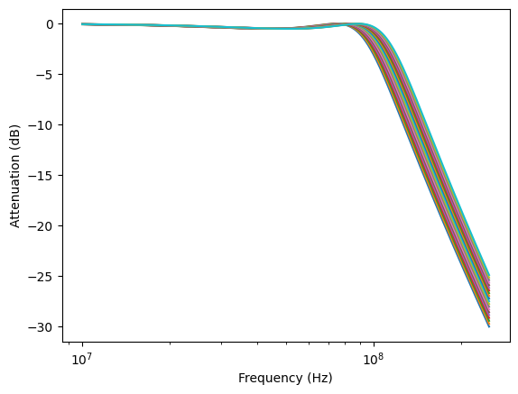
freq, atten = buildAtt(50e6, 130e6)
analyticalRF = rf.Network(frequency = freq, s = atten)Epsilon 0.34931140018894796LTSpice Simulation Results
Graphs the Smith chart, magnitude chart, and phase chart of the LTSpice Simulation
Defining Function that will Help Graph Magnitude Plots
def plotPhaseAndDb(network, plotPts, axes, c, title):
axes[0].set_title(f"Magnitude of {title}")
axes[1].set_title(f"Phase of {title}")
network.plot_s_db(ax=axes[0], color=c[0], linewidth=4)
if(plotPts):
my_arr = network.s_db[:,0,0]
my_frq = network.f
loc_at_3 = find(my_arr, -3)
freq_at_3 = my_frq[loc_at_3]/(2*np.pi)
att_at_3 = my_arr[loc_at_3]
loc_at_20 = find(my_arr, -20)
freq_at_20 = my_frq[loc_at_20]/(2*np.pi)
att_at_20 = my_arr[loc_at_20]
axes[0].scatter(my_frq[loc_at_3], my_arr[loc_at_3], c='blue')
axes[0].annotate(f" Passband Freq: ({my_frq[loc_at_3]/1e6:0.2f} MHz, {my_arr[loc_at_3]:0.2f} dB)", (my_frq[loc_at_3], my_arr[loc_at_3]) )
axes[0].scatter(my_frq[loc_at_20], my_arr[loc_at_20], c='pink')
axes[0].annotate(f" Stopband Freq: ({my_frq[loc_at_20]/1e6:0.2f} MHz, {my_arr[loc_at_20]:0.2f} dB)", (my_frq[loc_at_20], my_arr[loc_at_20]) )
network.plot_s_deg(ax=axes[1], color=c[1], linewidth=4)Graphing the S11 and S21’s Magnitude Plot: 70 MHz to 130 MHz
filename = "dp1_70_to_130.txt"
frequency_arr = []
s_arr = []
with open(filename, 'r') as input_file:
line_array = input_file.readlines()
# Change first line to s1p format
line_array[0] = "# MHz S MA R 50"
j = 0
# LTspice exports with commas, change to spaces
for idx, line in enumerate(line_array[1:]):
line_array[idx] = line.replace(",", " ")
arr = [float(x) for x in line_array[idx].split()]
frequency_arr.append(arr[0])
s_arr.append([[arr[1]+1j*arr[2], arr[3]+1j*arr[4]],
[arr[5]+1j*arr[6], arr[7]+1j*arr[8]]])
f_arr = np.array(frequency_arr)
svals_arr = np.array(s_arr)
fig, axes = plt.subplots(1,4, figsize=[20,30])
s11 = rf.Network(frequency = f_arr, s = svals_arr[:,0,0])
s12 = rf.Network(frequency = f_arr, s = svals_arr[:,0,1])
s21 = rf.Network(frequency = f_arr, s = svals_arr[:,1,0])
s22 = rf.Network(frequency = f_arr, s = svals_arr[:,1,1])
s11.plot_s_smith(ax=axes[0], draw_labels=True, color='b', linewidth=2)
s12.plot_s_smith(ax=axes[1], draw_labels=True, color='g', linewidth=2)
s21.plot_s_smith(ax=axes[2], draw_labels=True, color='r', linewidth=2)
s22.plot_s_smith(ax=axes[3], draw_labels=True, color='b', linewidth=2)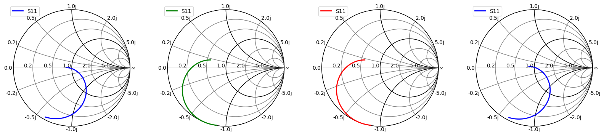
fig, axes = plt.subplots(4,2, figsize=[20,20])
mag_color = 'b'; deg_color = 'r'
plotPhaseAndDb(s11, False, axes[0:2, 0], [mag_color, deg_color], "S11")
plotPhaseAndDb(s12, False, axes[0:2, 1], [mag_color, deg_color], "S12")
plotPhaseAndDb(s21, True, axes[2:4, 0], [mag_color, deg_color], "S21")
plotPhaseAndDb(s22, False, axes[2:4, 1], [mag_color, deg_color], "S22")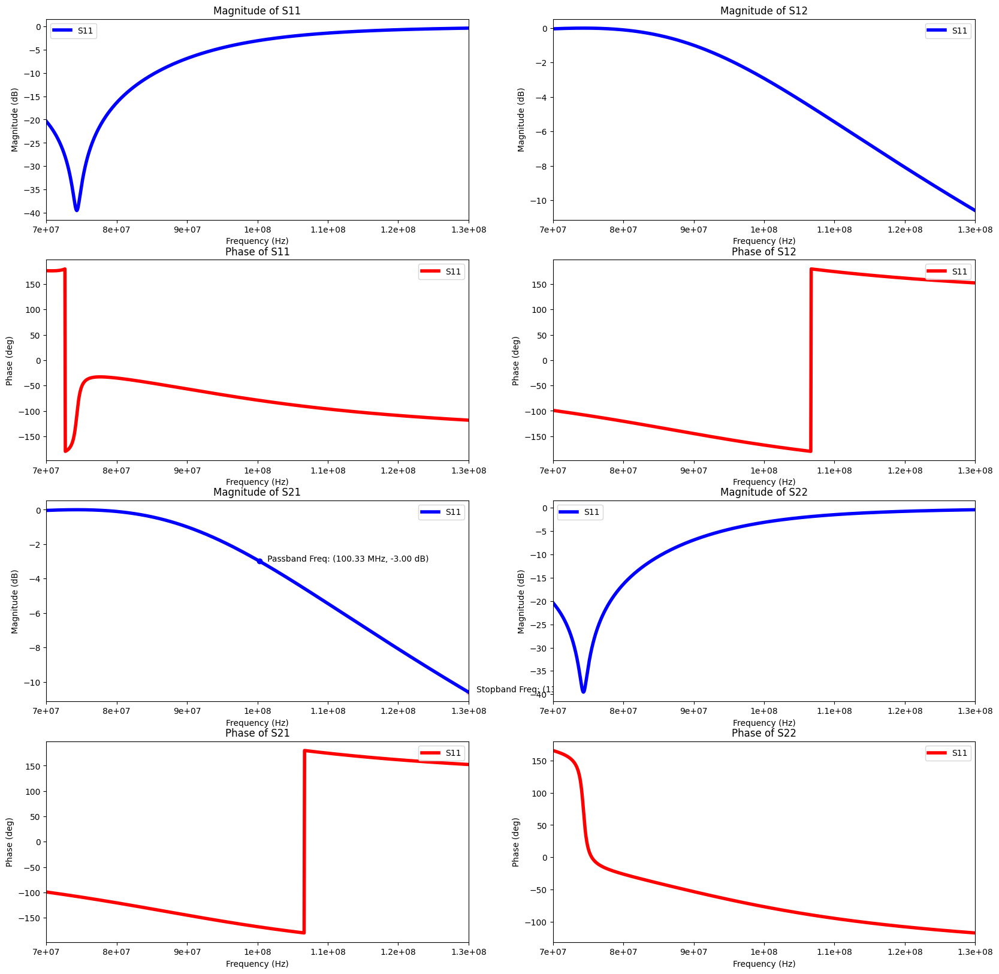
filename = "dsp1_50to130.txt"
frequency_arr = []
s_arr = []
with open(filename, 'r') as input_file:
line_array = input_file.readlines()
# Change first line to s1p format
line_array[0] = "# MHz S MA R 50"
j = 0
# LTspice exports with commas, change to spaces
for idx, line in enumerate(line_array[1:]):
line_array[idx] = line.replace(",", " ")
arr = [float(x) for x in line_array[idx].split()]
frequency_arr.append(arr[0])
s_arr.append([[arr[1]+1j*arr[2], arr[3]+1j*arr[4]],
[arr[5]+1j*arr[6], arr[7]+1j*arr[8]]])
f_arr = np.array(frequency_arr)
svals_arr = np.array(s_arr)
s21_Ideal = rf.Network(frequency = f_arr, s = svals_arr[:,1,0])Graphing the S11 and S21’s Magnitude Plot: 0Hz - 300 MHz
filename = "dp1_1_to_300M.txt"
frequency_arr = []
s_arr = []
with open(filename, 'r') as input_file:
line_array = input_file.readlines()
# Change first line to s1p format
line_array[0] = "# MHz S MA R 50"
j = 0
# LTspice exports with commas, change to spaces
for idx, line in enumerate(line_array[1:]):
line_array[idx] = line.replace(",", " ")
arr = [float(x) for x in line_array[idx].split()]
frequency_arr.append(arr[0])
s_arr.append([[arr[1]+1j*arr[2], arr[3]+1j*arr[4]],
[arr[5]+1j*arr[6], arr[7]+1j*arr[8]]])
f_arr = np.array(frequency_arr)
svals_arr = np.array(s_arr)
fig, axes = plt.subplots(1,4, figsize=[20,30])
s11 = rf.Network(frequency = f_arr, s = svals_arr[:,0,0])
s12 = rf.Network(frequency = f_arr, s = svals_arr[:,0,1])
s21 = rf.Network(frequency = f_arr, s = svals_arr[:,1,0])
s22 = rf.Network(frequency = f_arr, s = svals_arr[:,1,1])
s11.plot_s_smith(ax=axes[0], draw_labels=True, color='b', linewidth=2)
s12.plot_s_smith(ax=axes[1], draw_labels=True, color='g', linewidth=2)
s21.plot_s_smith(ax=axes[2], draw_labels=True, color='r', linewidth=2)
s22.plot_s_smith(ax=axes[3], draw_labels=True, color='b', linewidth=2)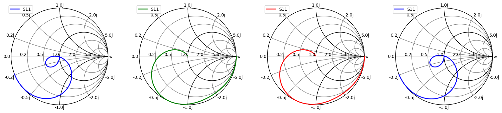
fig, axes = plt.subplots(4,2, figsize=[20,20])
mag_color = 'b'; deg_color = 'r'
plotPhaseAndDb(s11, False, axes[0:2, 0], [mag_color, deg_color], "S11")
plotPhaseAndDb(s12, False, axes[0:2, 1], [mag_color, deg_color], "S12")
plotPhaseAndDb(s21, True, axes[2:4, 0], [mag_color, deg_color], "S21")
plotPhaseAndDb(s22, False, axes[2:4, 1], [mag_color, deg_color], "S22")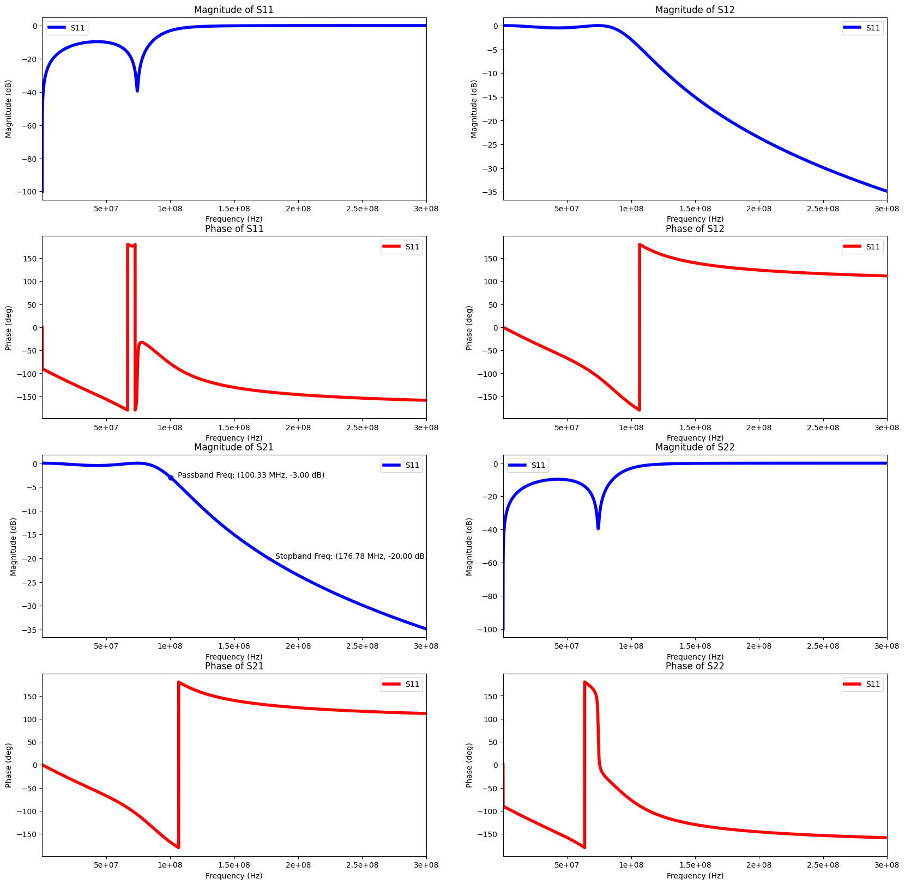
## plotting the magnitude and phase data desired
start_val = s21.s_db[0]
my_arr = s21.s_db[:,0,0]
my_frq = s21.f
loc_at_3 = find(my_arr, -3)
freq_at_3 = my_frq[loc_at_3]/(2*np.pi)
att_at_3 = my_arr[loc_at_3]
loc_at_20 = find(my_arr, -20)
freq_at_20 = my_frq[loc_at_20]/(2*np.pi)
att_at_20 = my_arr[loc_at_20]
fig2, ax2 = plt.subplots(2,1, figsize=[20,10])
s11.plot_s_db(ax=ax2[0], color='g', linewidth=4)
s21.plot_s_db(ax=ax2[1], color='r', linewidth=1)
sval = (np.ones(len(s21.s_db)) * start_val).T
ax2[1].plot(s21.f, sval, linewidth=2)
ax2[1].scatter(my_frq[loc_at_3], my_arr[loc_at_3], c='blue')
ax2[1].annotate(f" Passband Freq: ({my_frq[loc_at_3]/1e6:0.2f} MHz, {my_arr[loc_at_3]:0.2f} dB)", (my_frq[loc_at_3], my_arr[loc_at_3]) )
ax2[1].scatter(my_frq[loc_at_20], my_arr[loc_at_20], c='pink')
ax2[1].annotate(f" Stopband Freq: ({my_frq[loc_at_20]/1e6:0.2f} MHz, {my_arr[loc_at_20]:0.2f} dB)", (my_frq[loc_at_20], my_arr[loc_at_20]) )
print("Insertion Loss: ", start_val[0][0])Insertion Loss: -8.68584255884301e-05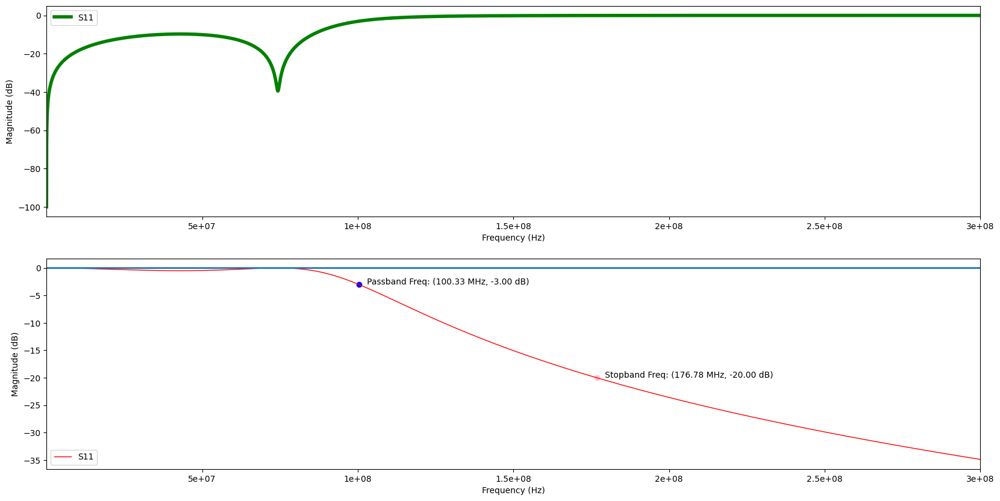
Finding the Passband of the System
db_orig = s21.s_db[:,0,0]
window_db = db_orig[0:int(len(s21.s_db)*0.28)]
plt.plot(window_db)
print(np.max(window_db) - np.min(window_db))0.4909297625102878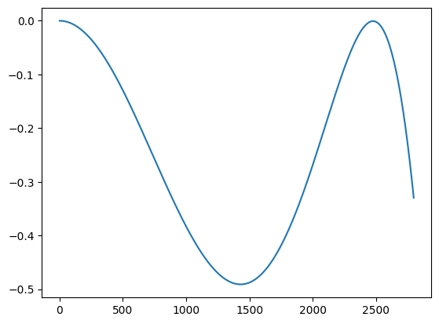
Plotting using the Real Components
The ESR Of The Capacitors: https://www.mouser.com/datasheet/2/447/UPY_High_Q_NP0_16V_to_250V_16-3003035.pdf * “Measuring frequency: 500 ± 50MHz at room temperature. 10pF < C ≤ 100pF :400mΩ max” * Q = 400 + 20*C
https://www.johansontechnology.com/tech-notes/q-esr-explained/ -> ESR = |X_C| / Q 47 pF – 10 pF –
Internal Resistance of the Inductors: https://microchip.ua/shareway/SDCL1608C.pdf
At 100 MHz, Quality Factors: * 1.8 nH +/- 0.3, Q = 11 –> R = 0.1028157596 * 100 nH, Q = 10 –> R = 6.283185307
print(1/(2*np.pi*100e6*(400+20*20)))1.989436788648692e-12filename="dp1_real_1to300MHz.txt"
frequency_arr = []
s_arr = []
with open(filename, 'r') as input_file:
line_array = input_file.readlines()
# Change first line to s1p format
line_array[0] = "# MHz S MA R 50"
j = 0
# LTspice exports with commas, change to spaces
for idx, line in enumerate(line_array[1:]):
line_array[idx] = line.replace(",", " ")
arr = [float(x) for x in line_array[idx].split()]
frequency_arr.append(arr[0])
s_arr.append([[arr[1]+1j*arr[2], arr[3]+1j*arr[4]],
[arr[5]+1j*arr[6], arr[7]+1j*arr[8]]])
f_arr = np.array(frequency_arr)
svals_arr = np.array(s_arr)
fig, axes = plt.subplots(1,4, figsize=[20,30])
s11 = rf.Network(frequency = f_arr, s = svals_arr[:,0,0])
s12 = rf.Network(frequency = f_arr, s = svals_arr[:,0,1])
s21 = rf.Network(frequency = f_arr, s = svals_arr[:,1,0])
s22 = rf.Network(frequency = f_arr, s = svals_arr[:,1,1])
s11.plot_s_smith(ax=axes[0], draw_labels=True, color='b', linewidth=2)
s12.plot_s_smith(ax=axes[1], draw_labels=True, color='g', linewidth=2)
s21.plot_s_smith(ax=axes[2], draw_labels=True, color='r', linewidth=2)
s22.plot_s_smith(ax=axes[3], draw_labels=True, color='b', linewidth=2)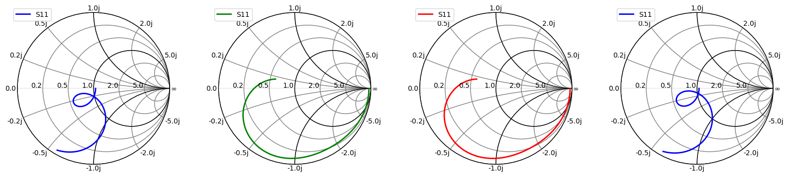
fig, axes = plt.subplots(1,1, figsize=[5,5])
s11.plot_s_smith(m=0, n=0, ax=axes, draw_labels=True, color='r', linewidth=5)
marker_idx = [30, 60, 90]
start_val = real_data_22.s_db[0]
sval = (np.ones(len(real_data_22.s_db)) * start_val).T
my_arr = s11.s_db[:,0,0]
my_frq = s11.f
loc_at_3 = find(my_arr, -3)
freq_at_3 = my_frq[loc_at_3]/(2*np.pi)
att_at_3 = my_arr[loc_at_3]
loc_at_20 = find(my_arr, -20)
freq_at_20 = my_frq[loc_at_20]/(2*np.pi)
att_at_20 = my_arr[loc_at_20]
loc_100MHz = find(my_frq, 100e6)
loc_70MHz = find(my_frq, 70e6)
loc_300MHz = find(my_frq, 300e6)
marker_idx = [loc_70MHz, loc_100MHz, loc_300MHz]
for i, k in enumerate(marker_idx):
x = s11.s.real[k, 0, 0]
y = s11.s.imag[k, 0, 0]
f = s11.frequency.f_scaled[k]
axes.scatter(x, y, marker = 'v', s=200, color='b')
axes.annotate(f"{my_frq[k]/1e6:.2f} MHz", (x, y), xytext=(10, 0), textcoords='offset points', color='b')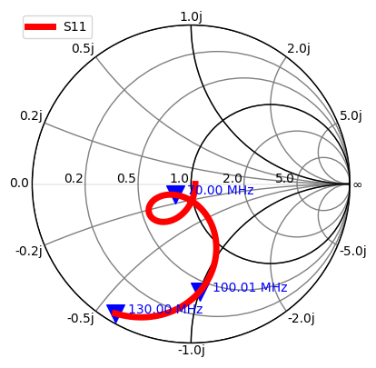
fig, axes = plt.subplots(4,2, figsize=[20,20])
mag_color = 'b'; deg_color = 'r'
plotPhaseAndDb(s11, False, axes[0:2, 0], [mag_color, deg_color], "S11")
plotPhaseAndDb(s12, False, axes[0:2, 1], [mag_color, deg_color], "S12")
plotPhaseAndDb(s21, True, axes[2:4, 0], [mag_color, deg_color], "S21")
plotPhaseAndDb(s22, False, axes[2:4, 1], [mag_color, deg_color], "S22")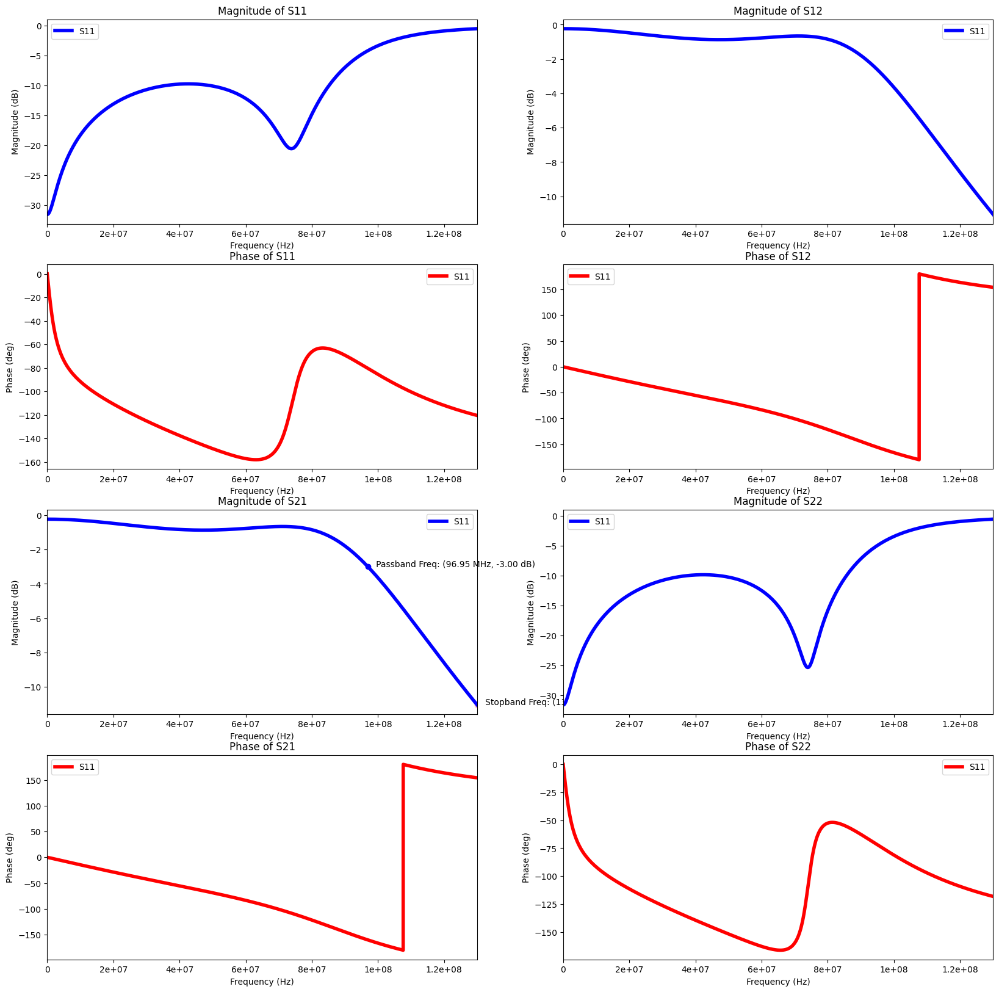
db_orig = s21.s_db[:,0,0]
window_db = db_orig[int(len(s21.s_db)*0.17):int(len(s21.s_db)*0.22)]
plt.plot(window_db)
print(np.max(window_db) - np.min(window_db))
print(db_orig[0])0.1348599021332898
-0.23157802101447628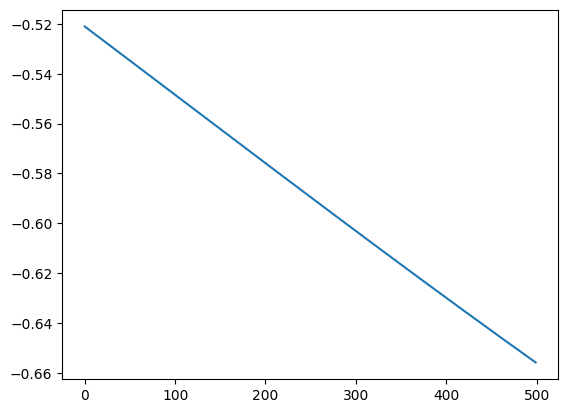
filename="dp1_real_30Mto130MHz.txt"
frequency_arr = []
s_arr = []
with open(filename, 'r') as input_file:
line_array = input_file.readlines()
# Change first line to s1p format
line_array[0] = "# MHz S MA R 50"
j = 0
# LTspice exports with commas, change to spaces
for idx, line in enumerate(line_array[1:]):
line_array[idx] = line.replace(",", " ")
arr = [float(x) for x in line_array[idx].split()]
frequency_arr.append(arr[0])
s_arr.append([[arr[1]+1j*arr[2], arr[3]+1j*arr[4]],
[arr[5]+1j*arr[6], arr[7]+1j*arr[8]]])
f_arr = np.array(frequency_arr)
svals_arr = np.array(s_arr)
s21_RealSim = rf.Network(frequency = f_arr, s = svals_arr[:,1,0])Graphing In Lab Data
import pandas as pd
fig, axes = plt.subplots(1,2, figsize=[20,30])
csv5 = pd.read_csv('CSV5.csv', skiprows=13)
csv5.columns = ['Frequency', 'Z_Real', 'Z_Imag', 'components', 'H']
csv5['Z_n'] = csv5['Z_Real']/50 + 1j*csv5['Z_Imag']/50
csv5['S_11'] = ( csv5['Z_n']-1 ) / ( csv5['Z_n']+1 )
real_data_11 = rf.Network(frequency = csv5['Frequency'], s = csv5['S_11'])
real_data_11.plot_s_smith(ax=axes[0], draw_labels=True, color='g', linewidth=4)
csv6 = pd.read_csv('CSV6.csv', skiprows=13)
csv6.columns = ['Frequency', 'Z_Real', 'Z_Imag', 'components', 'H']
csv6['Z_n'] = csv6['Z_Real']/50 + 1j*csv6['Z_Imag']/50
csv6['S_21'] = ( csv6['Z_n']-1 ) / ( csv6['Z_n']+1 )
real_data_22 = rf.Network(frequency = csv6['Frequency'], s = csv6['S_21'])
real_data_22.plot_s_smith(ax=axes[1], draw_labels=True, color='r', linewidth=4)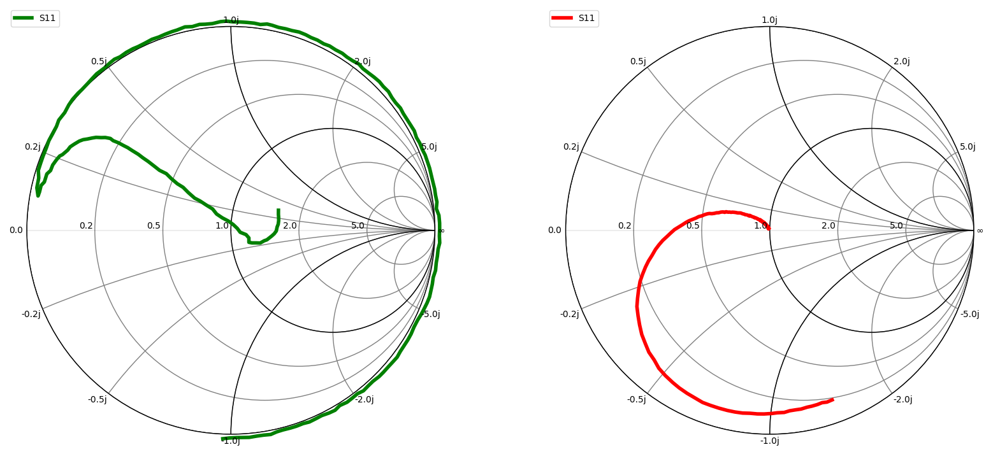
fig, axes = plt.subplots(2,1, figsize=[10,6])
fig.title = ("Lost it")
real_data_11.plot_s_db(ax=axes[0], color='g', linewidth=4)
real_data_22.plot_s_db(ax=axes[1], color='r', linewidth=4)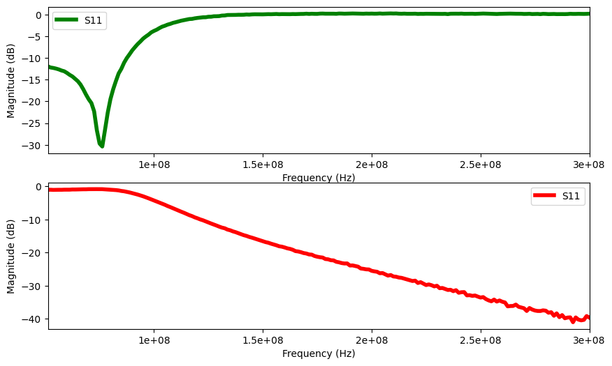
fig, axes = plt.subplots(1,2, figsize=[20,30])
csv7 = pd.read_csv('CSV7.csv', skiprows=13)
csv7.columns = ['Frequency', 'Z_Real', 'Z_Imag', 'components', 'H']
csv7['Z_n'] = csv7['Z_Real']/50 + 1j*csv7['Z_Imag']/50
csv7['S_11'] = ( csv7['Z_n']-1 ) / ( csv7['Z_n']+1 )
real_data_11 = rf.Network(frequency = csv7['Frequency'], s = csv7['S_11'])
real_data_11.plot_s_smith(ax=axes[0], draw_labels=True, color='g', linewidth=4)
csv8 = pd.read_csv('CSV8.csv', skiprows=13)
csv8.columns = ['Frequency', 'Z_Real', 'Z_Imag', 'components', 'H']
csv8['Z_n'] = csv8['Z_Real']/50 + 1j*csv8['Z_Imag']/50
csv8['S_21'] = ( csv8['Z_n']-1 ) / ( csv8['Z_n']+1 )
real_data_22 = rf.Network(frequency = csv8['Frequency'], s = csv8['S_21'])
real_data_22.plot_s_smith(ax=axes[1], draw_labels=True, color='r', linewidth=4)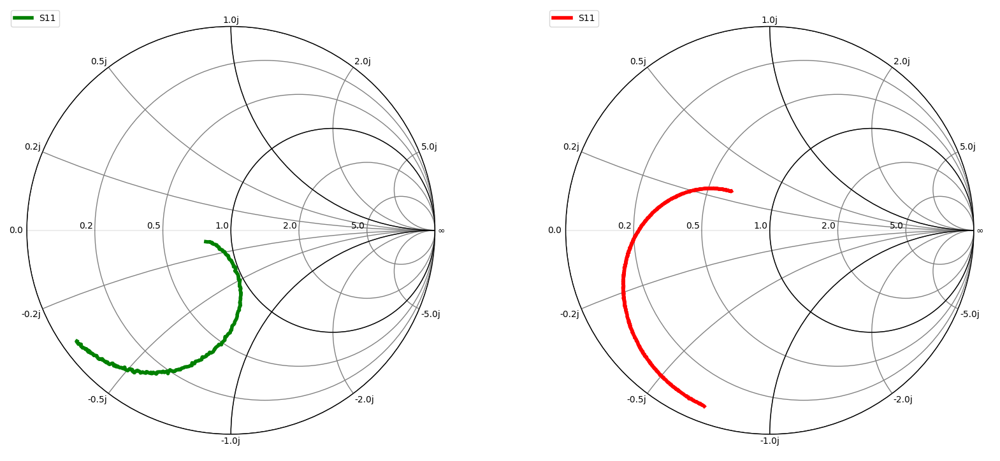
fig, axes = plt.subplots(2,1, figsize=[10,6])
real_data_11.plot_s_db(ax=axes[0], color='g', linewidth=4)
real_data_22.plot_s_db(ax=axes[1], color='r', linewidth=4)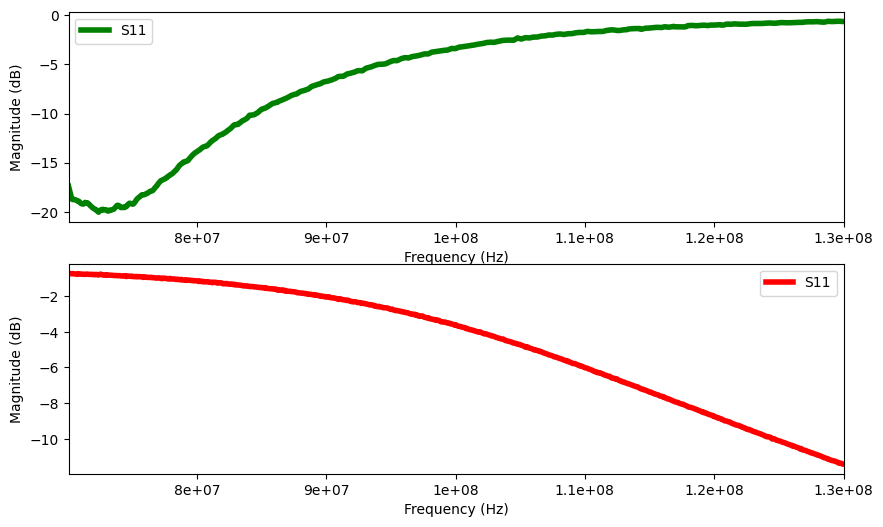
fig, axes = plt.subplots(1,2, figsize=[20,30])
csv9 = pd.read_csv('CSV9.csv', skiprows=13)
print(csv9)
csv9.columns = ['Frequency', 'Z_Real', 'Z_Imag', 'components', 'H']
csv9['Z_n'] = csv9['Z_Real']/50 + 1j*csv9['Z_Imag']/50
csv9['S_11'] = ( csv9['Z_n']-1 ) / ( csv9['Z_n']+1 )
real_data_11 = rf.Network(frequency = csv9['Frequency'], s = csv9['S_11'])
real_data_11.plot_s_smith(ax=axes[0], draw_labels=True, color='g', linewidth=4)
########################
csv10 = pd.read_csv('CSV10.csv', skiprows=13)
csv10.columns = ['Frequency', 'Z_Real', 'Z_Imag', 'components', 'H']
csv10['Z_n'] = csv10['Z_Real']/50 + 1j*csv10['Z_Imag']/50
csv10['S_21'] = ( csv10['Z_n']-1 ) / ( csv10['Z_n']+1 )
real_data_22 = rf.Network(frequency = csv10['Frequency'], s = csv10['S_21'], m=0, n=0)
real_data_22.plot_s_smith(m=0, n=0, ax=axes[1], draw_labels=True, color='r', linewidth=4)
marker_idx = [30, 60, 90]
start_val = real_data_22.s_db[0]
sval = (np.ones(len(real_data_22.s_db)) * start_val).T
plt.plot(real_data_22.f, sval, linewidth=2)
my_arr = real_data_22.s_db[:,0,0]
my_frq = real_data_22.f
loc_at_3 = find(my_arr, -3)
freq_at_3 = my_frq[loc_at_3]/(2*np.pi)
att_at_3 = my_arr[loc_at_3]
loc_at_20 = find(my_arr, -20)
freq_at_20 = my_frq[loc_at_20]/(2*np.pi)
att_at_20 = my_arr[loc_at_20]
loc_100MHz = find(my_frq, 100e6)
loc_70MHz = find(my_frq, 70e6)
loc_300MHz = find(my_frq, 300e6)
marker_idx = [loc_70MHz, loc_100MHz, loc_300MHz]
for i, k in enumerate(marker_idx):
x = real_data_22.s.real[k, 0, 0]
y = real_data_22.s.imag[k, 0, 0]
f = real_data_22.frequency.f_scaled[k]
axes[1].scatter(x, y, marker = 'v', s=200, color='b')
axes[1].annotate(f"{my_frq[k]/1e6:.2f} MHz", (x, y), xytext=(10, 0), textcoords='offset points', color='b')
x = real_data_11.s.real[k, 0, 0]
y = real_data_11.s.imag[k, 0, 0]
f = real_data_11.frequency.f_scaled[k]
axes[0].scatter(x, y, marker = 'v', s=200, color='b')
axes[0].annotate(f"{my_frq[k]/1e6:.2f} MHz", (x, y), xytext=(10, 0), textcoords='offset points', color='b') 1.000000e+05 4.162457e+01 3.279533e+00 5.219538e-06 H
0 499866.7 45.253340 1.915612 6.099210e-07 H
1 899733.3 45.638650 1.572002 2.780735e-07 H
2 1299600.0 45.590860 1.319891 1.616398e-07 H
3 1699467.0 45.491010 1.028820 9.634890e-08 H
4 2099333.0 45.166610 0.862867 6.541578e-08 H
.. ... ... ... ... ..
745 298400500.0 1.832955 -41.253800 1.292875e-11 F
746 298800400.0 1.776957 -40.154270 1.326500e-11 F
747 299200300.0 1.739530 -39.069840 1.361496e-11 F
748 299600100.0 1.710317 -38.028480 1.396913e-11 F
749 300000000.0 1.673458 -36.995080 1.434019e-11 F
[750 rows x 5 columns]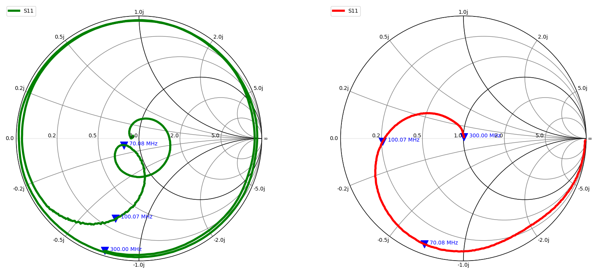
fig, axes = plt.subplots(2,1, figsize=[10,6])
real_data_11.plot_s_db(ax=axes[0], color='g', linewidth=4)
real_data_22.plot_s_db(ax=axes[1], color='r', linewidth=1)
plt.scatter(my_frq[loc_at_3], my_arr[loc_at_3], c='blue')
plt.annotate(f" Passband Freq: ({my_frq[loc_at_3]/1e6:0.2f} MHz, {my_arr[loc_at_3]:0.2f} dB)", (my_frq[loc_at_3], my_arr[loc_at_3]) )
plt.scatter(my_frq[loc_at_20], my_arr[loc_at_20], c='pink')
plt.annotate(f" Stopband Freq: ({my_frq[loc_at_20]/1e6:0.2f} MHz, {my_arr[loc_at_20]:0.2f} dB)", (my_frq[loc_at_20], my_arr[loc_at_20]) )
print(real_data_22.s_db[50])[[-0.52153499]]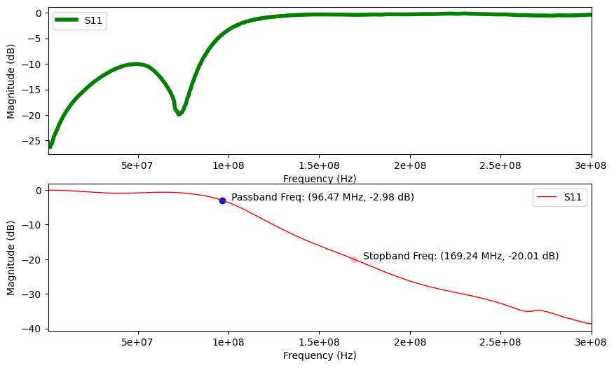
db_orig = real_data_22.s_db[:,0,0]
window_db = db_orig[0:int(len(s21.s_db)*0.018)]
plt.plot(window_db)
print(np.max(window_db) - np.min(window_db))
print(db_orig[0])0.9154496682728998
-0.06881931174276346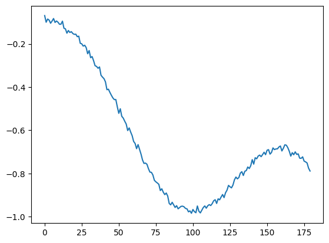
Graphing for the Final Figure Used in Report
fig, axes = plt.subplots(2,2, figsize=[10,10])
## 0, 0 -> analytical
axCurr = axes[0][0]
axCurr.set_title("Magnitude of Analytical Model S21")
axCurr.set_xlabel("Frequency")
axCurr.set_ylabel("Attenuation")
plt.xscale("log")
end = -1
pb_analytical = find(analyticalRF.s_db, -1)
ct_analytical = find(analyticalRF.s_db, -3)
sb_analytical = find(analyticalRF.s_db, -20)
#axCurr.scatter(my_frq[loc_at_3], my_arr[loc_at_3], c='blue')
# plt.annotate(f" Passband Freq: ({my_frq[loc_at_3]/1e6:0.2f} MHz, {my_arr[loc_at_3]:0.2f} dB)", (my_frq[loc_at_3], my_arr[loc_at_3]) )
# plt.scatter(my_frq[loc_at_20], my_arr[loc_at_20], c='pink')
# plt.annotate(f" Stopband Freq: ({my_frq[loc_at_20]/1e6:0.2f} MHz, {my_arr[loc_at_20]:0.2f} dB)", (my_frq[loc_at_20], my_arr[loc_at_20]) )
plt.plot(freq_ratios[:end], -att1[:end], linewidth=1, label="Chebyshev 1")
for i, k in enumerate(marker_idx):
x = real_data_22.s.real[k, 0, 0]
y = real_data_22.s.imag[k, 0, 0]
f = real_data_22.frequency.f_scaled[k]
axes[1].scatter(x, y, marker = 'v', s=200, color='b')
axes[1].annotate(f"{my_frq[k]/1e6:.2f} MHz", (x, y), xytext=(10, 0), textcoords='offset points', color='b')